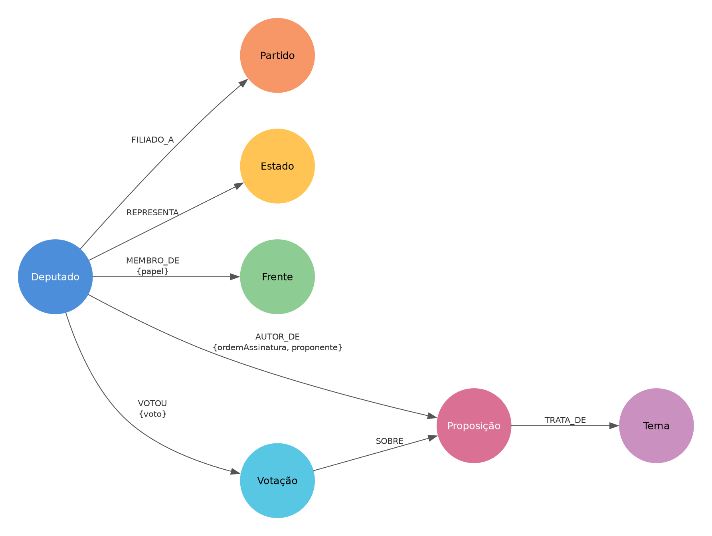
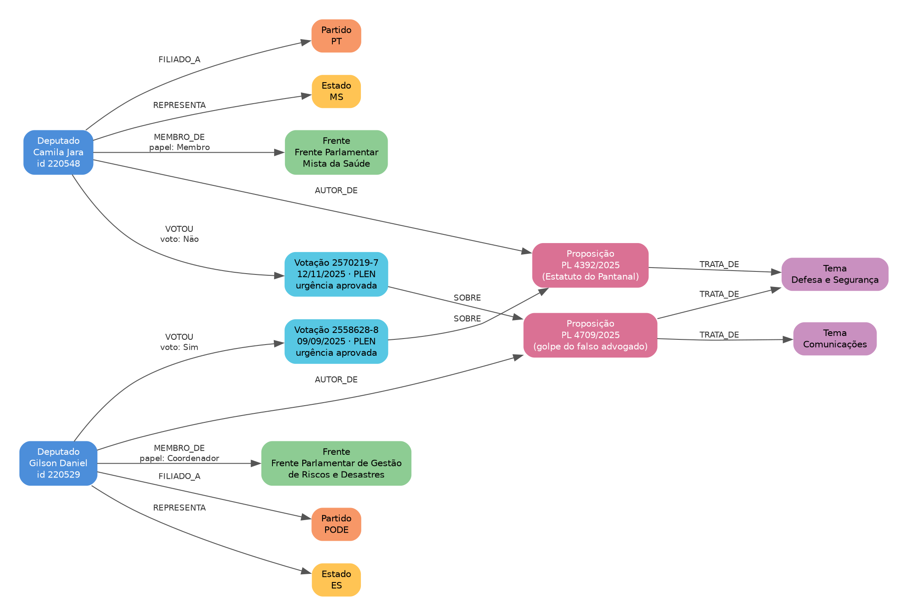
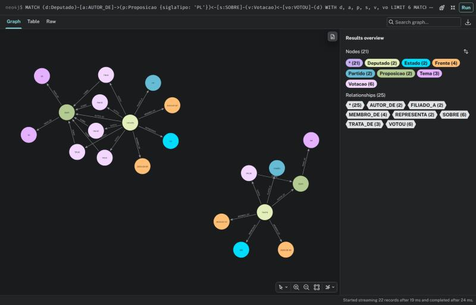
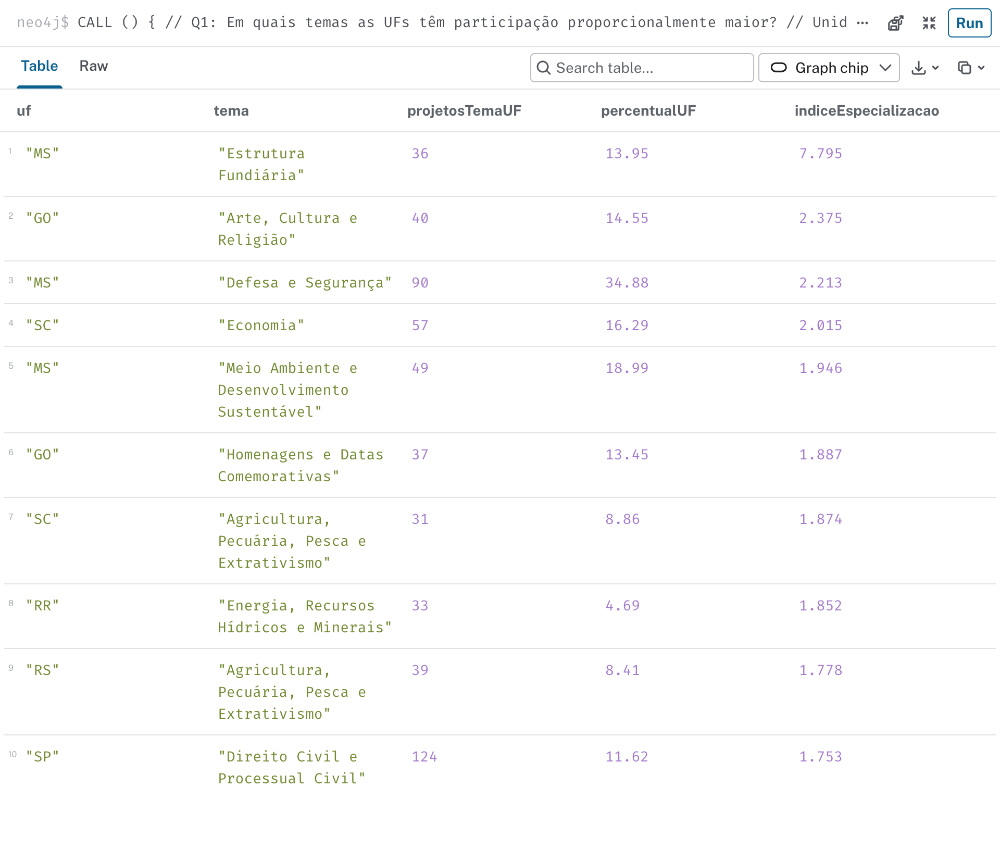
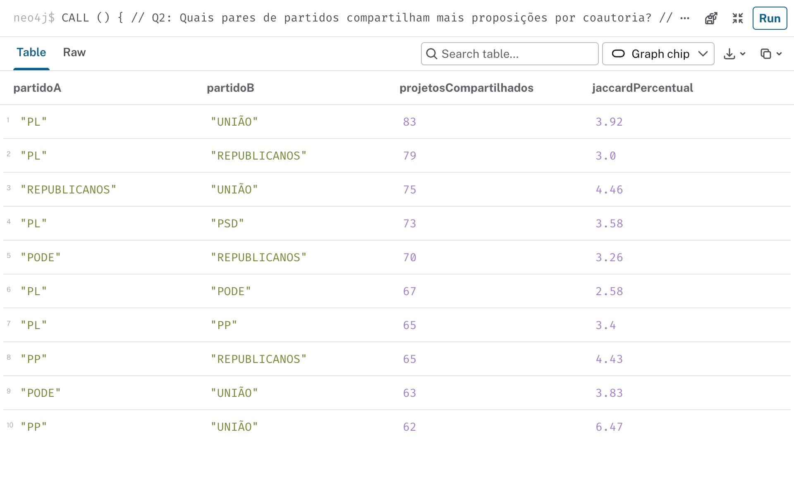
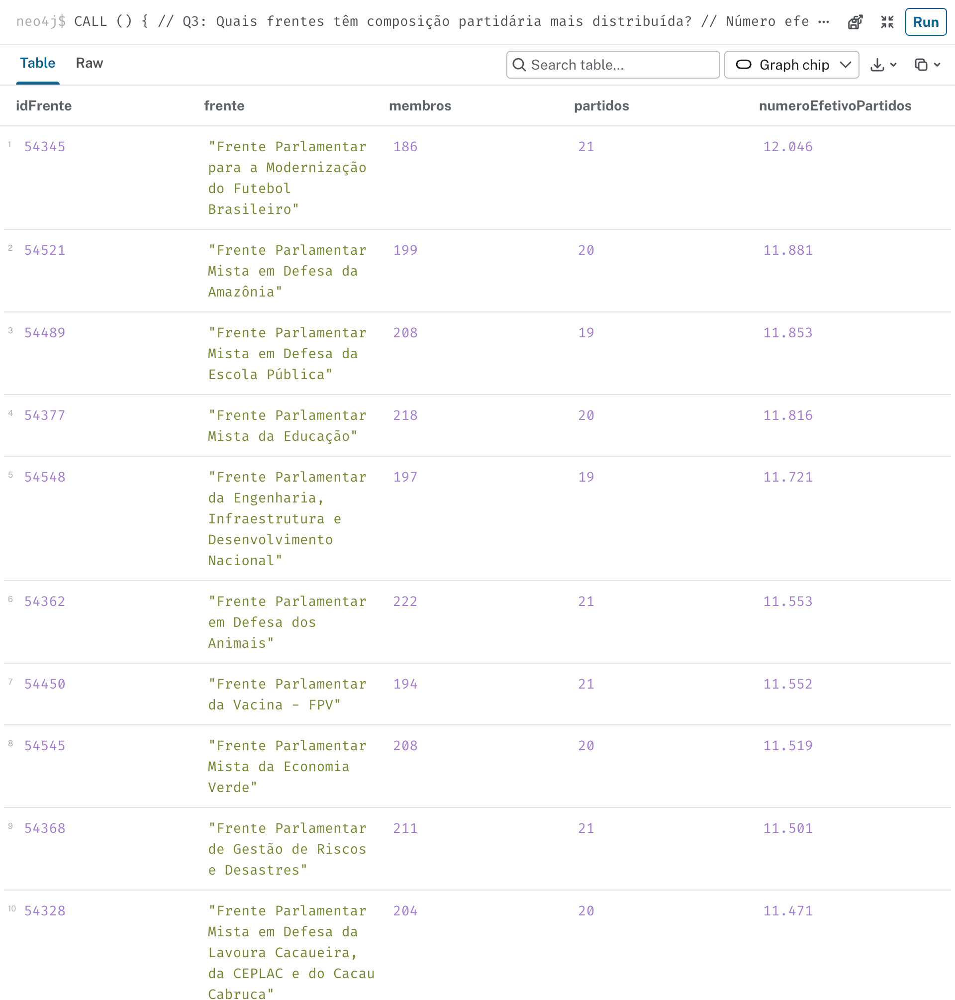
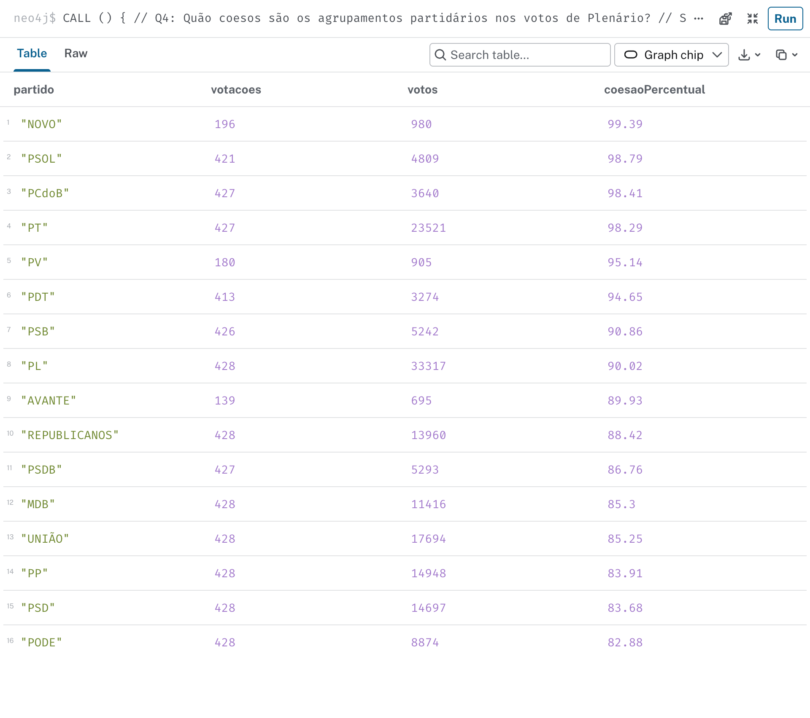
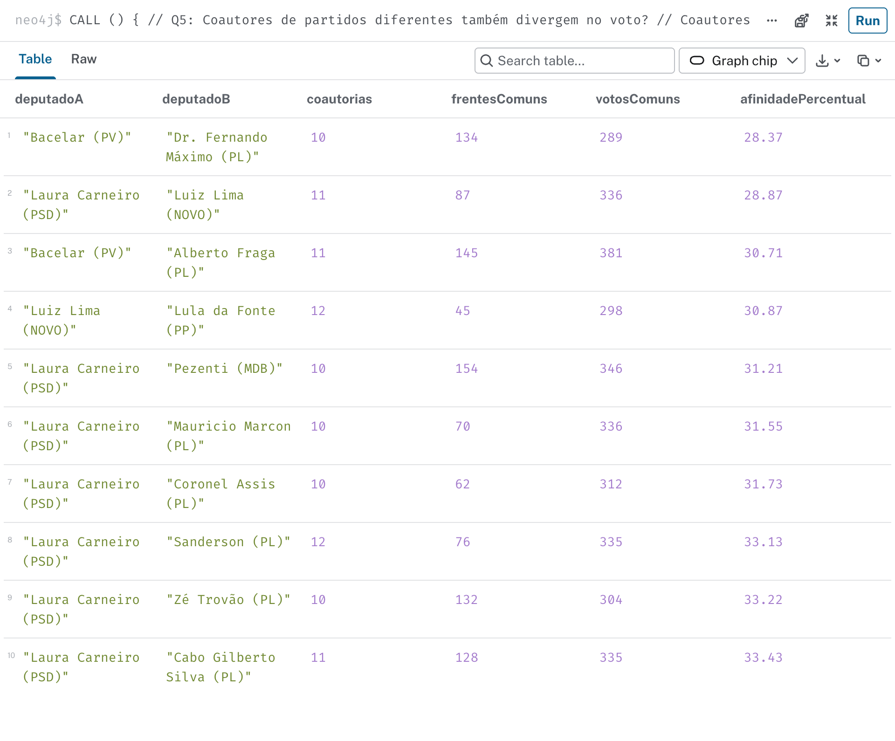

Antonio Adolfo Geraldino Bernardo (828561) e Rafaela Silva Ruis (834416)
Os dados vêm do Portal de Dados Abertos da Câmara dos Deputados (https://dadosabertos.camara.leg.br). O recorte é a 57ª legislatura (2023 a 2027) e o ano de 2025, que é o último ano completo disponível. A ideia foi pegar um ano inteiro de atividade da Câmara: quem são os deputados, de quais frentes participam, o que propuseram e como votaram.
O que entrou no banco, depois da limpeza:
| Dados | Quantidade |
|---|---|
| Deputados | 648 |
| Partidos | 22 |
| Estados | 27 |
| Frentes parlamentares | 320 |
| Participações em frentes | 65.313 |
| Proposições | 8.248 |
| Autorias | 13.123 |
| Temas / ligações proposição-tema | 32 / 19.379 |
| Votações nominais válidas | 549 |
| Ligações votação-proposição | 568 |
| Votos individuais | 174.646 |
Snapshot de 25/11/2026. Os 421 votos vazios e a votação sem votos individuais válidos foram excluídos antes da carga.
Período: as votações vão de 11/02/2025 a 17/12/2025. Das 8.248 proposições, 8.104 têm ano 2025. As outras 144 são de anos anteriores e entraram porque foram votadas em 2025 (por exemplo, o PL 759/2015).
Alguns detalhes que ajudam a entender os dados:
A coleta tem dois scripts em Python, só com biblioteca padrão (urllib e csv), então rodam sem instalar nada.
O 01_coleta.py busca os deputados na API REST (/deputados?idLegislatura=57), seguindo os links de paginação de 100 em 100, e baixa os arquivos CSV anuais do portal. Os deputados vieram da API porque o CSV de deputados do portal é histórico e não traz o partido atual. Os arquivos ficam em dados/brutos (cerca de 300 MB, sendo 98 MB só o de membros de frentes, que tem todas as legislaturas desde 2003).
"""
Coleta dos dados do Portal de Dados Abertos da Câmara dos Deputados.
- Deputados da 57ª legislatura (2023-2027) vêm da API REST (/deputados),
porque o CSV de deputados não traz o partido atual.
- O resto vem dos arquivos CSV anuais (bulk) do portal, ano de 2025.
Uso: python3 scripts/01_coleta.py
Saída: dados/brutos/*.csv
"""
import csv
import json
import os
import hashlib
import time
import urllib.request
from datetime import datetime, timezone
LEGISLATURA = 57
ANO = 2025
BASE_API = "https://dadosabertos.camara.leg.br/api/v2"
BASE_ARQ = "https://dadosabertos.camara.leg.br/arquivos"
PASTA = os.path.join(os.path.dirname(__file__), "..", "dados", "brutos")
ARQUIVOS = {
"frentes.csv": f"{BASE_ARQ}/frentes/csv/frentes.csv",
"frentesDeputados.csv": f"{BASE_ARQ}/frentesDeputados/csv/frentesDeputados.csv",
f"proposicoes-{ANO}.csv": f"{BASE_ARQ}/proposicoes/csv/proposicoes-{ANO}.csv",
f"proposicoesAutores-{ANO}.csv": f"{BASE_ARQ}/proposicoesAutores/csv/proposicoesAutores-{ANO}.csv",
f"proposicoesTemas-{ANO}.csv": f"{BASE_ARQ}/proposicoesTemas/csv/proposicoesTemas-{ANO}.csv",
f"votacoes-{ANO}.csv": f"{BASE_ARQ}/votacoes/csv/votacoes-{ANO}.csv",
f"votacoesVotos-{ANO}.csv": f"{BASE_ARQ}/votacoesVotos/csv/votacoesVotos-{ANO}.csv",
f"votacoesProposicoes-{ANO}.csv": f"{BASE_ARQ}/votacoesProposicoes/csv/votacoesProposicoes-{ANO}.csv",
}
def get_json(url):
req = urllib.request.Request(url, headers={"Accept": "application/json"})
with urllib.request.urlopen(req, timeout=60) as r:
return json.load(r)
def coletar_deputados():
"""Percorre a paginação da API e salva os deputados da legislatura."""
url = f"{BASE_API}/deputados?idLegislatura={LEGISLATURA}&itens=100&ordem=ASC&ordenarPor=nome"
deputados = []
while url:
resp = get_json(url)
deputados.extend(resp["dados"])
url = next((l["href"] for l in resp["links"] if l["rel"] == "next"), None)
campos = ["id", "nome", "siglaPartido", "siglaUf", "idLegislatura", "email"]
destino = os.path.join(PASTA, "deputados.csv")
with open(destino, "w", newline="", encoding="utf-8") as f:
w = csv.DictWriter(f, fieldnames=campos, delimiter=";", extrasaction="ignore")
w.writeheader()
w.writerows(deputados)
print(f"deputados.csv: {len(deputados)} registros")
def baixar_arquivos():
for nome, url in ARQUIVOS.items():
destino = os.path.join(PASTA, nome)
if os.path.exists(destino):
print(f"{nome}: já existe, pulando")
continue
print(f"baixando {nome} ...")
temporario = destino + ".part"
for tentativa in range(3):
try:
req = urllib.request.Request(url, headers={"User-Agent": "bdcd-coleta/1.0"})
with urllib.request.urlopen(req, timeout=120) as origem, open(temporario, "wb") as saida:
while True:
bloco = origem.read(1024 * 1024)
if not bloco:
break
saida.write(bloco)
os.replace(temporario, destino)
break
except (OSError, TimeoutError):
if os.path.exists(temporario):
os.remove(temporario)
if tentativa == 2:
raise
time.sleep(2 ** tentativa)
def registrar_fontes():
"""Registra URLs e hashes do snapshot local, sem guardar credenciais."""
fontes = dict(ARQUIVOS)
fontes["deputados.csv"] = f"{BASE_API}/deputados?idLegislatura={LEGISLATURA}&itens=100&ordem=ASC&ordenarPor=nome"
arquivos = []
for nome, url in sorted(fontes.items()):
caminho = os.path.join(PASTA, nome)
digest = hashlib.sha256()
with open(caminho, "rb") as arquivo:
for bloco in iter(lambda: arquivo.read(1024 * 1024), b""):
digest.update(bloco)
arquivos.append({"arquivo": "brutos/" + nome, "url": url,
"bytes": os.path.getsize(caminho), "sha256": digest.hexdigest()})
manifesto = {"manifesto_em_utc": datetime.now(timezone.utc).isoformat(),
"ano": ANO, "legislatura": LEGISLATURA, "arquivos": arquivos}
with open(os.path.join(PASTA, "..", "fontes.json"), "w", encoding="utf-8") as arquivo:
json.dump(manifesto, arquivo, ensure_ascii=False, indent=2)
arquivo.write("\n")
if __name__ == "__main__":
os.makedirs(PASTA, exist_ok=True)
coletar_deputados()
baixar_arquivos()
registrar_fontes()
O 02_preprocessamento.py aplica os filtros descritos na seção anterior e gera CSVs menores, com só as colunas que vão para o grafo, na pasta dados/neo4j (cerca de 9 MB no total). As ementas são cortadas em 500 caracteres.
"""
Limpa e filtra os CSVs brutos e gera arquivos prontos pro LOAD CSV do Neo4j.
Filtros:
- Deputados: 57ª legislatura (último registro retornado para cada ID).
- Frentes: só as da 57ª legislatura.
- Proposições: apresentadas em 2025, só tipos de projeto (PL, PLP, PEC, PDL, MPV, PRC),
mais qualquer proposição (de qualquer ano) que tenha ido a votação nominal em 2025.
- Autoria: só autores que são deputados da 57ª legislatura.
- Votações: só as nominais de 2025 (as que têm votos individuais).
Uso: python3 scripts/02_preprocessamento.py
Saída: dados/neo4j/*.csv
"""
import csv
import os
import sys
csv.field_size_limit(sys.maxsize)
ANO = 2025
LEG = "57"
TIPOS = {"PL", "PLP", "PEC", "PDL", "MPV", "PRC"}
RAIZ = os.path.join(os.path.dirname(__file__), "..", "dados")
BRUTOS = os.path.join(RAIZ, "brutos")
SAIDA = os.path.join(RAIZ, "neo4j")
def ler(nome):
with open(os.path.join(BRUTOS, nome), encoding="utf-8-sig", newline="") as f:
yield from csv.DictReader(f, delimiter=";")
def escrever(nome, campos, linhas):
with open(os.path.join(SAIDA, nome), "w", encoding="utf-8", newline="") as f:
w = csv.writer(f)
w.writerow(campos)
n = 0
for l in linhas:
w.writerow(l)
n += 1
print(f"{nome}: {n} linhas")
def limpa(txt, tam=500):
return " ".join((txt or "").split())[:tam]
def id_de_uri(uri):
return uri.rstrip("/").rsplit("/", 1)[-1]
os.makedirs(SAIDA, exist_ok=True)
# A ordem da API não garante cronologia de filiação: preservamos o último
# registro retornado, sem interpretar esse partido como o partido de cada voto.
deputados = {}
for r in ler("deputados.csv"):
deputados[r["id"]] = r
escrever("deputados.csv", ["id", "nome", "partido", "uf"],
([d["id"], d["nome"], d["siglaPartido"], d["siglaUf"]] for d in deputados.values()))
# Frentes e membros
frentes = {r["id"]: r for r in ler("frentes.csv") if r["idLegislatura"] == LEG}
escrever("frentes.csv", ["id", "titulo", "dataCriacao"],
([f["id"], limpa(f["titulo"]), f["dataCriacao"]] for f in frentes.values()))
escrever("frentes_membros.csv", ["idFrente", "idDeputado", "papel"],
([r["id"], r["deputado_.id"], r["deputado_.titulo"]] for r in ler("frentesDeputados.csv")
if r["id"] in frentes and r["deputado_.id"] in deputados))
# Votações nominais
votos = [r for r in ler(f"votacoesVotos-{ANO}.csv")
if r["deputado_id"] in deputados and r["voto"].strip()]
ids_votacoes = {v["idVotacao"] for v in votos}
escrever("votos.csv", ["idVotacao", "idDeputado", "voto"],
([v["idVotacao"], v["deputado_id"], v["voto"]] for v in votos))
escrever("votacoes.csv", ["id", "data", "orgao", "aprovacao", "votosSim", "votosNao", "descricao"],
([v["id"], v["data"], v["siglaOrgao"], v["aprovacao"], v["votosSim"], v["votosNao"],
limpa(v["descricao"], 300)]
for v in ler(f"votacoes-{ANO}.csv") if v["id"] in ids_votacoes))
# Ligação votação -> proposição (e proposições votadas, mesmo de outros anos)
vot_prop = [r for r in ler(f"votacoesProposicoes-{ANO}.csv") if r["idVotacao"] in ids_votacoes]
escrever("votacoes_proposicoes.csv", ["idVotacao", "idProposicao"],
([r["idVotacao"], r["proposicao_id"]] for r in vot_prop))
proposicoes = {}
for r in vot_prop:
proposicoes[r["proposicao_id"]] = [r["proposicao_id"], r["proposicao_siglaTipo"], r["proposicao_numero"],
r["proposicao_ano"], "", limpa(r["proposicao_ementa"])]
for r in ler(f"proposicoes-{ANO}.csv"):
if r["siglaTipo"] in TIPOS or r["id"] in proposicoes:
proposicoes[r["id"]] = [r["id"], r["siglaTipo"], r["numero"], r["ano"],
r["dataApresentacao"][:10], limpa(r["ementa"])]
escrever("proposicoes.csv", ["id", "siglaTipo", "numero", "ano", "dataApresentacao", "ementa"],
proposicoes.values())
# Autoria (só deputados)
escrever("autorias.csv", ["idProposicao", "idDeputado", "ordemAssinatura", "proponente"],
([r["idProposicao"], r["idDeputadoAutor"], r["ordemAssinatura"], r["proponente"]]
for r in ler(f"proposicoesAutores-{ANO}.csv")
if r["idProposicao"] in proposicoes and r["idDeputadoAutor"] in deputados))
# Temas
escrever("temas.csv", ["idProposicao", "codTema", "tema"],
([id_de_uri(r["uriProposicao"]), r["codTema"], r["tema"]]
for r in ler(f"proposicoesTemas-{ANO}.csv") if id_de_uri(r["uriProposicao"]) in proposicoes))
O grafo tem 7 tipos de nó e 7 tipos de relacionamento. O deputado fica no centro, ligado ao partido, ao estado, às frentes, às proposições de que é autor e às votações em que votou.

Algumas decisões do modelo:
A figura abaixo mostra 2 exemplos reais de cada tipo de nó e de relacionamento, tirados do banco: os deputados Camila Jara (PT/MS) e Gilson Daniel (PODE/ES), cada um com uma frente, um projeto de lei de sua autoria, a votação de urgência desse projeto e os temas. Um detalhe que o exemplo mostra: Camila votou Não na urgência do projeto do Gilson, e Gilson votou Sim na urgência do projeto dela.

A importação usa LOAD CSV, rodado pelo cypher-shell num container Docker com Neo4j 5.26 (a pasta dados/neo4j foi montada como pasta de import). Antes de carregar, o script cria uma restrição de unicidade para cada tipo de nó, o que também cria o índice usado nos MATCH das arestas. Os arquivos maiores (votos e membros de frentes) são carregados com CALL IN TRANSACTIONS, em lotes de 5 a 10 mil linhas. A carga toda levou cerca de 12 segundos.
// Importação dos dados da Câmara (57ª legislatura, ano 2025) no Neo4j 5.
// Os CSVs de dados/neo4j precisam estar na pasta import do Neo4j.
// ---------- Restrições (também criam índices) ----------
CREATE CONSTRAINT deputado_id IF NOT EXISTS FOR (d:Deputado) REQUIRE d.id IS UNIQUE;
CREATE CONSTRAINT partido_sigla IF NOT EXISTS FOR (p:Partido) REQUIRE p.sigla IS UNIQUE;
CREATE CONSTRAINT estado_uf IF NOT EXISTS FOR (e:Estado) REQUIRE e.uf IS UNIQUE;
CREATE CONSTRAINT frente_id IF NOT EXISTS FOR (f:Frente) REQUIRE f.id IS UNIQUE;
CREATE CONSTRAINT proposicao_id IF NOT EXISTS FOR (p:Proposicao) REQUIRE p.id IS UNIQUE;
CREATE CONSTRAINT tema_cod IF NOT EXISTS FOR (t:Tema) REQUIRE t.cod IS UNIQUE;
CREATE CONSTRAINT votacao_id IF NOT EXISTS FOR (v:Votacao) REQUIRE v.id IS UNIQUE;
// ---------- Deputados, partidos e estados ----------
LOAD CSV WITH HEADERS FROM 'file:///deputados.csv' AS r
MERGE (d:Deputado {id: toInteger(r.id)})
SET d.nome = r.nome, d.partido = r.partido, d.uf = r.uf
MERGE (p:Partido {sigla: r.partido})
MERGE (e:Estado {uf: r.uf})
MERGE (d)-[:FILIADO_A]->(p)
MERGE (d)-[:REPRESENTA]->(e);
// ---------- Frentes parlamentares ----------
LOAD CSV WITH HEADERS FROM 'file:///frentes.csv' AS r
MERGE (f:Frente {id: toInteger(r.id)})
SET f.titulo = r.titulo, f.dataCriacao = date(r.dataCriacao);
LOAD CSV WITH HEADERS FROM 'file:///frentes_membros.csv' AS r
CALL (r) {
MATCH (d:Deputado {id: toInteger(r.idDeputado)})
MATCH (f:Frente {id: toInteger(r.idFrente)})
MERGE (d)-[m:MEMBRO_DE]->(f)
SET m.papel = r.papel
} IN TRANSACTIONS OF 5000 ROWS;
// ---------- Proposições, autoria e temas ----------
LOAD CSV WITH HEADERS FROM 'file:///proposicoes.csv' AS r
CALL (r) {
MERGE (p:Proposicao {id: toInteger(r.id)})
SET p.siglaTipo = r.siglaTipo,
p.numero = toInteger(r.numero),
p.ano = toInteger(r.ano),
p.nome = r.siglaTipo + ' ' + r.numero + '/' + r.ano,
p.dataApresentacao = CASE r.dataApresentacao WHEN '' THEN null ELSE date(r.dataApresentacao) END,
p.ementa = r.ementa
} IN TRANSACTIONS OF 5000 ROWS;
LOAD CSV WITH HEADERS FROM 'file:///autorias.csv' AS r
CALL (r) {
MATCH (d:Deputado {id: toInteger(r.idDeputado)})
MATCH (p:Proposicao {id: toInteger(r.idProposicao)})
MERGE (d)-[a:AUTOR_DE]->(p)
SET a.ordemAssinatura = toInteger(r.ordemAssinatura),
a.proponente = r.proponente = '1'
} IN TRANSACTIONS OF 5000 ROWS;
LOAD CSV WITH HEADERS FROM 'file:///temas.csv' AS r
CALL (r) {
MATCH (p:Proposicao {id: toInteger(r.idProposicao)})
MERGE (t:Tema {cod: toInteger(r.codTema)})
SET t.nome = r.tema
MERGE (p)-[:TRATA_DE]->(t)
} IN TRANSACTIONS OF 5000 ROWS;
// ---------- Votações e votos ----------
LOAD CSV WITH HEADERS FROM 'file:///votacoes.csv' AS r
MERGE (v:Votacao {id: r.id})
SET v.data = date(r.data),
v.orgao = r.orgao,
v.aprovada = r.aprovacao = '1',
v.votosSim = toInteger(r.votosSim),
v.votosNao = toInteger(r.votosNao),
v.descricao = r.descricao;
LOAD CSV WITH HEADERS FROM 'file:///votacoes_proposicoes.csv' AS r
MATCH (v:Votacao {id: r.idVotacao})
MATCH (p:Proposicao {id: toInteger(r.idProposicao)})
MERGE (v)-[:SOBRE]->(p);
LOAD CSV WITH HEADERS FROM 'file:///votos.csv' AS r
CALL (r) {
WITH r WHERE r.voto IS NOT NULL AND r.voto <> ''
MATCH (d:Deputado {id: toInteger(r.idDeputado)})
MATCH (v:Votacao {id: r.idVotacao})
MERGE (d)-[x:VOTOU]->(v)
SET x.voto = r.voto
} IN TRANSACTIONS OF 10000 ROWS;
Comando usado para rodar o script:
docker compose up -d --wait docker compose exec -T neo4j cypher-shell < scripts/03_importacao.cypher python3 scripts/06_validar.py --neo4j
Contagem depois da importação, que bate com o número de linhas dos CSVs:
| Nó | Quantidade | Relacionamento | Quantidade |
|---|---|---|---|
| Deputado | 648 | FILIADO_A | 648 |
| Frente | 320 | REPRESENTA | 648 |
| Proposicao | 8248 | MEMBRO_DE | 65313 |
| Votacao | 549 | AUTOR_DE | 13123 |
| Tema | 32 | TRATA_DE | 19379 |
| Partido | 22 | SOBRE | 568 |
| Estado | 27 | VOTOU | 174646 |
| Total | 9846 | Total | 274325 |
O banco tem 9.846 nós e cerca de 274 mil relacionamentos, e o Neo4j Browser não consegue desenhar tudo isso de uma vez. Por isso a consulta abaixo pega uma amostra que tem todos os tipos de nó e de relacionamento: deputados que votaram na votação de um PL de que são autores, com partido, estado, temas do PL e duas frentes de cada um.
// Amostra do grafo com todos os tipos de nó e de relacionamento (para o print do Neo4j Browser).
MATCH (d:Deputado)-[a:AUTOR_DE]->(p:Proposicao {siglaTipo: 'PL'})<-[s:SOBRE]-(v:Votacao)<-[vo:VOTOU]-(d)
WITH d, a, p, s, v, vo LIMIT 6
MATCH (d)-[f:FILIADO_A]->(pa:Partido)
MATCH (d)-[r:REPRESENTA]->(e:Estado)
MATCH (p)-[t:TRATA_DE]->(tm:Tema)
CALL (d) { MATCH (d)-[m:MEMBRO_DE]->(fr:Frente) RETURN m, fr LIMIT 2 }
RETURN *;
No resultado aparecem 21 nós e 25 relacionamentos, com os 7 rótulos e os 7 tipos de aresta listados no painel da direita.

As consultas a seguir usam o snapshot coletado em 25/11/2026. Proposições são contadas por identificador distinto, evitando multiplicar os resultados quando há vários autores ou temas. Os partidos correspondem ao registro de deputado mantido na coleta; não constituem um histórico de filiação na data de cada voto. Os prints mostram as principais colunas de cada resultado no Neo4j Browser; os arquivos CSV e JSON preservam a saída completa.
Em quais temas os deputados de uma UF apresentam participação proporcionalmente maior que a observada no conjunto nacional?
O índice divide a proporção de proposições de um tema na UF pela proporção desse tema no conjunto nacional. O universo contém 7.151 proposições de ano 2025 com pelo menos um autor deputado e classificação temática. A consulta exige pelo menos 100 proposições na UF e 30 no tema. Um projeto conta uma vez em cada UF com autor, e pode integrar vários temas.
// Q1: Em quais temas as UFs têm participação proporcionalmente maior?
// Unidade: proposição distinta de 2025 com autor deputado e tema cadastrado.
MATCH (p:Proposicao {ano: 2025})
WHERE EXISTS { (:Deputado)-[:AUTOR_DE]->(p) }
AND EXISTS { (p)-[:TRATA_DE]->(:Tema) }
WITH count(p) AS totalBrasil
MATCH (e:Estado)<-[:REPRESENTA]-(:Deputado)-[:AUTOR_DE]->(p:Proposicao {ano: 2025})-[:TRATA_DE]->(t:Tema)
WITH totalBrasil, e, t, count(DISTINCT p) AS projetosTemaUF
CALL (e) {
MATCH (e)<-[:REPRESENTA]-(:Deputado)-[:AUTOR_DE]->(p:Proposicao {ano: 2025})
WHERE EXISTS { (p)-[:TRATA_DE]->(:Tema) }
RETURN count(DISTINCT p) AS totalUF
}
CALL (t) {
MATCH (p:Proposicao {ano: 2025})-[:TRATA_DE]->(t)
WHERE EXISTS { (:Deputado)-[:AUTOR_DE]->(p) }
RETURN count(DISTINCT p) AS projetosTemaBrasil
}
WITH *, (1.0 * projetosTemaUF / totalUF) / (1.0 * projetosTemaBrasil / totalBrasil) AS indice
WHERE totalUF >= 100 AND projetosTemaUF >= 30
RETURN e.uf AS uf, t.nome AS tema, projetosTemaUF, totalUF,
projetosTemaBrasil, totalBrasil,
round(100.0 * projetosTemaUF / totalUF, 2) AS percentualUF,
round(100.0 * projetosTemaBrasil / totalBrasil, 2) AS percentualBrasil,
round(indice, 3) AS indiceEspecializacao
ORDER BY indice DESC, projetosTemaUF DESC, uf, tema LIMIT 10;

Mato Grosso do Sul se destaca em Estrutura Fundiária: 36 das 258 proposições associadas à UF tratam do tema, ou 13,95%, diante de 1,79% no conjunto nacional. O índice de 7,795 indica uma participação relativa quase oito vezes maior. Santa Catarina também apresenta concentração em Economia, com 16,29% de suas proposições ante 8,08% no conjunto nacional, índice de 2,015.
A normalização permite comparar UFs com volumes de produção diferentes e revela concentrações que um ranking de quantidades esconderia. O resultado descreve a pauta das proposições assinadas pelos deputados do recorte; não mede a preferência da população nem demonstra que características econômicas da UF causaram essa concentração. Como as assinaturas de apoio também contam como autoria, uma iniciativa coletiva pode influenciar o perfil observado.
Quais pares de partidos compartilham mais proposições por coautoria, e essa aproximação continua alta quando se considera o tamanho de suas produções?
A consulta percorre Partido–Deputado–Proposição–Deputado–Partido e conta proposições distintas de ano 2025 por par de partidos. A similaridade de Jaccard é a interseção dividida pela união das proposições dos dois partidos, multiplicada por 100. A ordenação usa o volume compartilhado e evita repetir o mesmo par em ordem inversa.
// Q2: Quais pares de partidos compartilham mais proposições por coautoria?
// Cada projeto conta uma vez por par; pares são ordenados para evitar espelhos.
MATCH (a:Partido)<-[:FILIADO_A]-(:Deputado)-[:AUTOR_DE]->(p:Proposicao {ano: 2025})
<-[:AUTOR_DE]-(:Deputado)-[:FILIADO_A]->(b:Partido)
WHERE a.sigla < b.sigla
WITH a, b, count(DISTINCT p) AS projetosCompartilhados
CALL (a) {
MATCH (a)<-[:FILIADO_A]-(:Deputado)-[:AUTOR_DE]->(p:Proposicao {ano: 2025})
RETURN count(DISTINCT p) AS projetosA
}
CALL (b) {
MATCH (b)<-[:FILIADO_A]-(:Deputado)-[:AUTOR_DE]->(p:Proposicao {ano: 2025})
RETURN count(DISTINCT p) AS projetosB
}
RETURN a.sigla AS partidoA, b.sigla AS partidoB, projetosCompartilhados,
projetosA, projetosB,
round(100.0 * projetosCompartilhados / (projetosA + projetosB - projetosCompartilhados), 2) AS jaccardPercentual
ORDER BY projetosCompartilhados DESC, partidoA, partidoB LIMIT 10;

PL e UNIÃO formam o par com maior número de proposições compartilhadas: 83. Entretanto, essas proposições representam apenas 3,92% da união de suas produções. PL e REPUBLICANOS aparecem em seguida, com 79 e Jaccard de 3,00%. Entre os dez pares listados, PP e UNIÃO têm menos proposições em comum, 62, mas maior similaridade proporcional, de 6,47%.
O volume absoluto identifica pontes relevantes pela quantidade de iniciativas, enquanto Jaccard mostra quanto essas pontes representam no conjunto das pautas de cada par. Assim, produzir muito pode elevar a contagem compartilhada sem gerar grande sobreposição proporcional. A coautoria expressa assinatura em proposições e pode incluir apoio; ela não comprova uma aliança estável nem concordância nas votações.
Quais frentes parlamentares reúnem uma composição partidária mais distribuída, em vez de apenas muitos partidos com participações desiguais?
Para frentes com pelo menos 100 deputados cadastrados, calcula-se o número efetivo de partidos: 1 dividido pela soma dos quadrados das participações partidárias. Se todos os partidos tivessem o mesmo número de membros, o indicador seria igual à quantidade de partidos. A consulta também retorna o tamanho da maior bancada.
// Q3: Quais frentes têm composição partidária mais distribuída?
// Número efetivo = 1 / soma das proporções partidárias ao quadrado.
MATCH (f:Frente)<-[:MEMBRO_DE]-(d:Deputado)-[:FILIADO_A]->(p:Partido)
WITH f, p, count(DISTINCT d) AS membrosPartido
WITH f, sum(membrosPartido) AS membros, count(*) AS partidos,
max(membrosPartido) AS maiorBancada, sum(membrosPartido * membrosPartido) AS somaQuadrados
WHERE membros >= 100
RETURN f.id AS idFrente, f.titulo AS frente, membros, partidos,
round(100.0 * maiorBancada / membros, 2) AS maiorBancadaPercentual,
round(1.0 * membros * membros / somaQuadrados, 3) AS numeroEfetivoPartidos
ORDER BY numeroEfetivoPartidos DESC, membros DESC, idFrente LIMIT 10;

A Frente Parlamentar para a Modernização do Futebol Brasileiro lidera o indicador: tem 186 membros, 21 partidos e número efetivo de 12,046. Sua maior bancada representa 14,52% dos membros. A Frente Parlamentar Mista em Defesa da Amazônia aparece em seguida, com 199 membros, 20 partidos e número efetivo de 11,881; sua maior bancada concentra 14,07%.
A diferença entre os 21 partidos presentes e os cerca de 12 partidos efetivos no primeiro caso mostra que presença e equilíbrio são medidas diferentes. O indicador distingue composições mais distribuídas mesmo quando várias frentes têm quantidades semelhantes de partidos. Os vínculos registram integrantes cadastrados, não frequência em reuniões ou atuação conjunta; por isso, pluralidade formal não deve ser confundida com cooperação efetiva.
Quão frequentemente os votos de cada agrupamento partidário acompanham sua própria maioria nas votações de Plenário?
São usados apenas votos Sim e Não, em votações com pelo menos cinco deputados do agrupamento e partidos com pelo menos 100 votações elegíveis. A coesão é a soma dos votos do lado majoritário em cada votação dividida pelo total de votos comparáveis. Em caso de empate, metade dos votos integra o numerador. A medida é ponderada pelo número de votos, e não uma média simples entre sessões.
// Q4: Quão coesos são os agrupamentos partidários nos votos de Plenário?
// Só Sim/Não. Empate fica no denominador com maioria de 50%.
MATCH (p:Partido)<-[:FILIADO_A]-(d:Deputado)-[r:VOTOU]->(v:Votacao {orgao: 'PLEN'})
WHERE r.voto IN ['Sim', 'Não']
WITH p, v, count(DISTINCT d) AS presentes,
sum(CASE WHEN r.voto = 'Sim' THEN 1 ELSE 0 END) AS sim
WHERE presentes >= 5
WITH p, count(*) AS votacoes, sum(presentes) AS votos,
sum(CASE WHEN sim >= presentes - sim THEN sim ELSE presentes - sim END) AS votosMajoritarios
WHERE votacoes >= 100
RETURN p.sigla AS partido, votacoes, votos, votosMajoritarios,
round(100.0 * votosMajoritarios / votos, 2) AS coesaoPercentual
ORDER BY coesaoPercentual DESC, partido;

NOVO apresenta coesão de 99,39% em 196 votações elegíveis, com 974 de 980 votos no lado majoritário. PSOL registra 98,79%, e PT, 98,29%, este último com 23.119 de 23.521 votos majoritários em 427 votações. No outro extremo da lista elegível, PODE apresenta 82,88%, PP 83,91% e PSD 83,68%, indicando maior divisão interna nesses agrupamentos.
Os valores mostram que os agrupamentos diferem na frequência de concordância interna, mas a comparação exige observar os denominadores: o conjunto de votações do NOVO é menor que o de partidos maiores. A métrica não mede apoio ao governo nem cumprimento de orientação partidária, pois compara os votos à maioria do próprio grupo. Além disso, agrupar pela filiação mantida na coleta impede interpretar o resultado como uma medida histórica exata de disciplina partidária em 2025.
Deputados de partidos diferentes que assinam projetos juntos também podem divergir frequentemente nas votações?
A consulta seleciona pares de partidos diferentes com pelo menos dez proposições conjuntas de ano 2025 e cem votações de Plenário com votos Sim ou Não de ambos. A afinidade é o número de votos iguais dividido pelos votos comparáveis. O resultado destaca os dez pares de menor afinidade nesse universo e conta as frentes que compartilham.
// Q5: Coautores de partidos diferentes também divergem no voto?
// Coautores frequentes: >=10 proposições conjuntas e >=100 votos comparáveis.
MATCH (a:Deputado)-[:AUTOR_DE]->(p:Proposicao {ano: 2025})<-[:AUTOR_DE]-(b:Deputado)
WHERE a.id < b.id AND a.partido <> b.partido
WITH a, b, count(DISTINCT p) AS coautorias
WHERE coautorias >= 10
CALL (a, b) {
MATCH (a)-[ra:VOTOU]->(v:Votacao {orgao: 'PLEN'})<-[rb:VOTOU]-(b)
WHERE ra.voto IN ['Sim', 'Não'] AND rb.voto IN ['Sim', 'Não']
RETURN count(*) AS votosComuns,
sum(CASE WHEN ra.voto = rb.voto THEN 1 ELSE 0 END) AS votosIguais
}
WITH * WHERE votosComuns >= 100
WITH *, 1.0 * votosIguais / votosComuns AS afinidade
ORDER BY afinidade ASC, coautorias DESC, a.id, b.id LIMIT 10
CALL (a, b) {
MATCH (a)-[:MEMBRO_DE]->(f:Frente)<-[:MEMBRO_DE]-(b)
RETURN count(DISTINCT f) AS frentesComuns
}
RETURN a.nome AS deputadoA, a.partido AS partidoA,
b.nome AS deputadoB, b.partido AS partidoB,
coautorias, frentesComuns, votosComuns, votosIguais,
round(100.0 * afinidade, 2) AS afinidadePercentual
ORDER BY afinidadePercentual ASC, coautorias DESC, deputadoA, deputadoB;

Bacelar (PV) e Dr. Fernando Máximo (PL) compartilham dez proposições e 134 frentes, mas votaram da mesma forma em apenas 82 de 289 votações comparáveis: afinidade de 28,37%. Laura Carneiro (PSD) e Luiz Lima (NOVO) têm onze coautorias, 87 frentes em comum e 97 votos iguais em 336 comparações, ou 28,87%. Esses casos combinam vínculos de produção legislativa e participação em frentes com forte divergência nas escolhas de voto.
O cruzamento mostra que proximidade em uma camada do grafo não garante proximidade nas demais. Assinar uma proposição ou integrar a mesma frente pode envolver uma pauta específica, enquanto o conjunto de votações inclui assuntos e etapas de tramitação variados. Como a consulta escolhe os pares mais divergentes entre coautores frequentes, esses casos não representam a afinidade média de todos os deputados nem provam que as frentes produzem divergência.
A modelagem em grafo permitiu observar a atividade parlamentar por caminhos que ligam território, autoria, partidos, frentes e votos. As consultas mostraram concentrações temáticas por UF, diferenças entre volume e proporção de coautoria, pluralidade formal nas frentes e níveis distintos de coesão nos votos. O cruzamento entre coautoria e votação acrescentou um resultado relevante: vínculos numerosos em projetos e frentes podem coexistir com baixa concordância nas decisões de Plenário.
Os principais desafios foram integrar identificadores de fontes diferentes, tratar registros repetidos e votos vazios e distinguir proposição de votação. As restrições de unicidade, a carga em lotes e a conferência entre CSVs e Neo4j tornaram o processo verificável. A reprodução das cinco métricas diretamente em Python confirmou os resultados das consultas. O projeto também evidenciou a importância de definir denominadores e limites de interpretação: filiação sem histórico, assinaturas de apoio e recortes de votação influenciam as conclusões. Como continuidade, o modelo pode incorporar filiação na data de cada voto e ampliar a série temporal para investigar a estabilidade dessas relações.
https://github.com/RafaMortandela/trabalho2-bdcd
Estrutura da pasta:
Codex e Claude foram utilizados como apoio ao desenvolvimento do código, à compreensão da modelagem em grafos e à elaboração do relatório. O apoio incluiu consultas Cypher, revisão de scripts e organização das análises dos resultados.
As interações foram contextualizadas com o enunciado, o repositório e o relatório existente. Os pedidos envolveram identificar requisitos incompletos, formular cinco perguntas analíticas e convertê-las em consultas. O refinamento concentrou-se em contar proposições distintas, definir denominadores, estabelecer filtros mínimos de suporte e distinguir coautoria de concordância no voto.
Os scripts de coleta, pré-processamento e importação, assim como os diagramas, já compunham a estrutura inicial. As consultas analíticas, a conferência independente das métricas e as instruções de reprodução foram desenvolvidas com apoio de IA e integradas a esse fluxo. O tratamento dos votos vazios e as contagens do relatório foram ajustados para manter consistência entre os arquivos tratados e o grafo.
A validação conferiu unicidade de chaves, referências entre arquivos, domínio dos votos e contagens de nós e relacionamentos. A importação foi executada novamente para verificar que não duplicava dados. As cinco consultas foram executadas no Neo4j e seus resultados foram recalculados em Python a partir dos CSVs, incluindo proporções, interseções, índices e ordenação. Os arquivos de resultados e os scripts de conferência estão disponíveis no repositório.